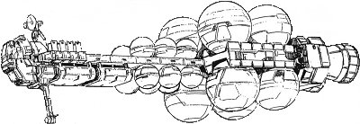
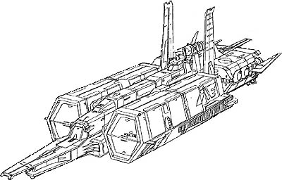
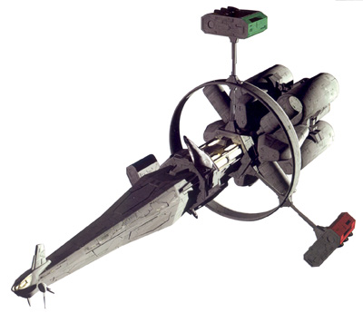
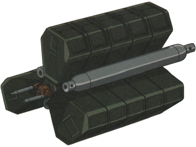
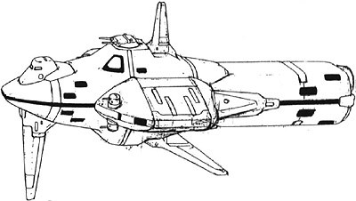
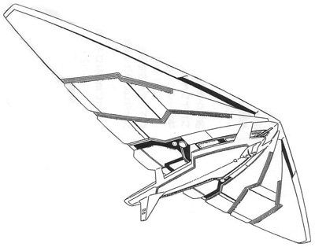

| Interplanetary Transport Craft |
|
|   |
|
General and Technical Data |
|
|
Unit Type: interplanetary transport craft Operator: Many different parties Propulsion system: nuclear pulse engines; solar sails Hangar capacity: 4x cargo, 1x infantry, 4x mobile suits Launch catapults: 0 Fixed armaments: none Technical and Historical Notes With almost the cargo space flaunted by the huge Columbus class carrier, Interplanetary Transport Crafts come in several varieties, but are all made to a certain set of JDEG standards. Equipped with nuclear pulse thrusters and much better sensor systems than your average battleship, the ITC is versatile and maneuverable even when compared to Duchy and Federation battleships, although it does not have an armament of its own. Further, much like any JDEG use vessel, the ITC uses a solar sail to facilitate interplanetary travel. When extended, the sail gives the transport craft speeds that will make even high mobility mobile suits blush after a reasonable amount of acceleration time, albiet sacrificing next to all of its maneuverability. |